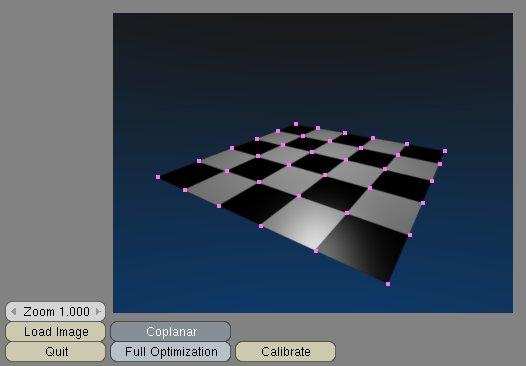

Camera Calibration Tutorial
This tutorial takes you through the task of calibrating a camera using
a collinear calibration target. Please read the Main Documentation if you haven't yet done so.
The image that is used for calibration is generated as a Blender
rendering (it is synthetic), and therefore allows for direct comparison
of the results of the calibration.
1. Load the Tutorial
- Start Blender.
- Load the file
tutorial.blend.
2. Examine the Scene
- Layer 1 contains the geometry of the rendered scene.
- Layer 2 contains Empties that comprise the calibration target,
and a camera to calibrate.
- Layer 3 contains the original camera and light source used to
render the synthetic image.
3. Use the BlenderTsai.py Script
- Use Alt-P in the text window to start the script. Note that while
you're using the script, you will need to be able to view the 3D view
in addition to the script window. The 3D window is used to select
empties to use as calibration points.
- Click the Load Image
button and load the
doc/calimg.tga image. This image is
stored as a RAW TGA file because the script can only load RAW TGA files:
- Select the Empty with the largest y-coordinate and x=0.
This empty corresponds to the top left corner of the checkerboard
pattern. Move the mouse over to the script window and press SPACEBAR to
add an image point. You can zoom using the mouse scroll wheel or
the zoom numeric button, and the image can be moved around by dragging
with the middle mouse button. The cross-hairs show the point's
prospective location. Click with the left mouse button to place the
point:
- If you need to move a point that has been placed already, you can
invoke grab mode on it by pressing GKEY. You can select points using
the right mouse button, and multiple selections can be achieved by
holding down either SHIFT key. When working with the image points,
GKEY, AKEY and XKEY work as expected. The only thing to note is that if
you start a drag with GKEY, you must complete it; you cannot cancel by
pressing ESCKEY. Points can additionally be deleted from the image by
pressing the Delete
button. Note that while the XKEY prompts before deleting points, the Delete button does not
prompt.
- Continue placing points on the image until each calibration Empty
has a corresponding image point.
- Select the camera to calibrate and click the Calibrate button in the
script window (the default options are what you need - see below):

- If everything has gone to planned, then the camera you have just
calibrated will match (closely) the camera originally used to render
the image. Check both the positions, orientations and the lens values
of the two cameras.
Jonathan Merritt (j.merritt@pgrad.unimelb.edu.au),
PhD Student (Equine Biomechanics),
The University of Melbourne
Equine Centre,
240 Princes Highway,
Werribee, Vic. 3030.
Last updated: 04-Nov-2004 (20041104).